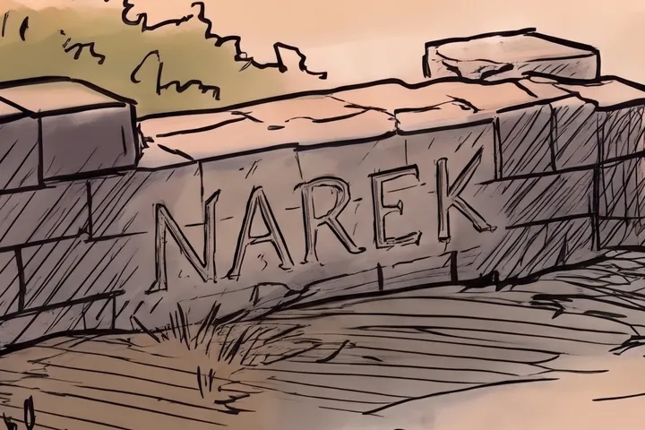
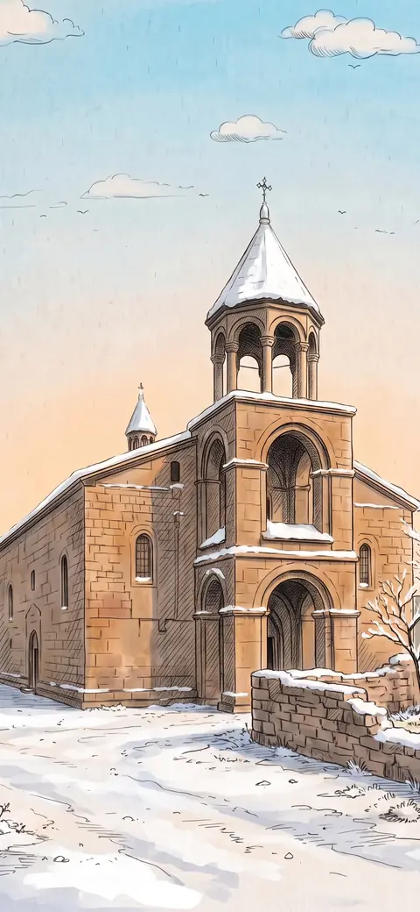

Խանութի կատալոգ · աշուն 2026Каталог лавки · осень 2026Shop catalogue · autumn 2026
Թանգարանի խանութЛавка музеяMuseum shop
Այստեղից ամեն իր օգնում է նկարել հաջորդ շենքը։Каждая вещь отсюда помогает нарисовать следующее здание.Everything here helps us draw the next building.

Գրություն քարի վրաНадпись в камнеYour name in stone$15 · 8 տեղ · ազատ՝ 88 мест · свободно 88 spots · 8 freeՔո անունը՝ ընդմիշտ Պողոս-Պետրոսի նկարումТвоё имя — навсегда в рисунке Погос-ПетросаYour name, forever in the drawing of Poghos-Petros


Պաստառներ «Կորած Երևանը»Обои «Потерянный Ереван»Wallpapers “Lost Yerevan”$3 · 16 · iPhone · Android16 նկար հեռախոսի համար՝ ցերեկ, գիշեր, ձյուն16 рисунков для телефона: день, ночь, снег16 drawings for your phone: day, night, snowՇուտով խանութումСкоро в лавкеComing to the shop
ՇուտովСкороSoonԳրություններ Սուրբ ՆիկողայոսումНадписи в Никольском собореNames in St. Nicholas Cathedral
ՇուտովСкороSoonԲացիկներОткрыткиPostcards
Խանութի գումարը գնում է նոր շենքերի նկարներին։Деньги лавки идут на рисунки новых зданий.Shop money goes into drawing new buildings.